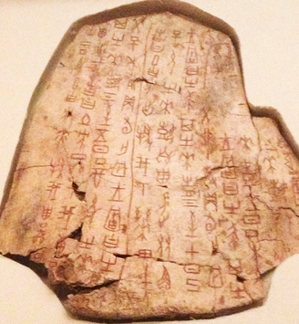

Overview - This web project is involving the transformation of ancient writing system, which either to make the comparison between eastern and western regions and their changes throughout historical periods. A writing system is “a set of visible or tactile signs used to represent units of language in a systematic way” (Lawrence Lo., 2012). Hence, the ancient writing systems are generally classified into Cuneiform scripts and Hieroglyphics scripts based on different writing signs; the original eastern writings were Oracle bone scripts and Chinese bronze inscriptions, then the writing system transforms throughout various dynasties and basically enclosing the logographic forms. In addition, for western writing systems, the earliest writing system was the Cuneiform scripts that created by Sumerians, and the research indicated it was emerged around 3,500 BCE (David Kleiner, 2012). Western writing system follows the logo-phonetic rubrics, and transforms from the Phoenician alphabet to the latter Latin and Greek alphabet systems. The reason for having a research on ancient writing system is because of a Chinese television show. My young sister is going to the Grade seven, and her teacher asked them to watch this show named “Voice”, which the first episode was talking about the ancient Chinese writing systems. I am always interested in some historical events, and I think the writing system is a vigorous evidence to support the existence of ancient culture in certain periods. I am quite aware of some ancient eastern writing scripts though; however, the western histories are not my strength. Therefore, the investigation on ancient writing system, and the brief comparison between different writing systems will augment my knowledge on national issues. Otherwise, most people rely on technologies nowadays, and I am very interested in diverse opinions of different people on ancient writing systems transformation, either the perspective thinks to preserve the system or ideas think just to completely abandon the ancient writings.

Topics - Some potential topics for this blog post will systematically follow the time trending of ancient writing development. The first topic should be a brief timeline evolution, which compares and contrasts the differences between the past and the present wring systems. I will use some representative writing scripts to clarify what has been changed throughout periods. I probably make this topic showing on my home page, which exhibit an overview of the content that I want to show, the transformation on writings. Followed by the general comparison, then I will make the comparison between western and eastern writing origins. The derivation of writings on separate areas around the world evolving into several completely distinct writing expressions. The example like the original recognizable form of Chinese was non-linguistical symbols that appeared around 1200 BCE, then the writing systems transformed from Seal scripts to Clerical script, etc., till the current simplified Chinese writing. The eastern writing characters were developed on the area of east Asia from the periods of 1,500 BCE to present. However, most western writing scrips were developed both in Egypt and Mesopotamia regions, the writing develops from Hieroglyphics scripts to Cuneiform scripts forms. The last topic involve with the ancient writing subject is the historical events that may lead to the prominent turnover on writing systems transformation. Separate cultures developed from different areas, and therefore simultaneously influenced their cultural prosperity, which also had the impact on their writing systems. The instance like Mesopotamians influenced Sumerians to edit and revise some symbols on clay 5,000 years ago, the new writing system has been formed completely (Heather Whipps, 2008).
Audience - The website is generally means to demonstrate a brief development of ancient writings to people who are not familiar with the field, and the website is also addressing to people who are interested in ancient writing systems. However, for people who has interests will be classified into three categories. The first type of audience will be people who are interested in historical linguistics; the second types of audience will be people who are interested in historical differences between eastern and western regions, in this case, the difference is primarily focused on writing scripts. The last type of audience is people who also want to investigate in similar subjects, if I can provide a diversity of sources, which might offer them some inspirations. The website is addressing to all types of audience, however, there cannot be a comprehensive knowledge covered in this website, the resources will be limited based on the time restriction, therefore the website will also post a discussion filed for people who wants to reveal their opinions or some suggestions about ancient writings.

Website - The website will be designed to create a homepage that set off with various ancient writing scripts images at back. Then, the page will generally be classified into two categories, the eastern and western regions on an ancient map, which highlight each representative ancient writing on the map follows the timeline. Then, for each category, I will add the link to each type of writing script. The selection bar of the homepage will include couple features, the BACKGROUND of ancient writing system transformation, the DERIVATION of each scripts in diverse areas, the MAP that indicate how eastern and western writings develops from the beginning, the PODCAST with different people that I will interview, and the last part is some POLLs I might post about the investigation on people’s opinions on “whether you think the ancient writing system still needs to be preserved or protected, or we can abandon the system because every culture now has their own well-developed language system”. The ancient writing system is a historical and authentic topic; therefore, all of my resources will be based on the existing investigations or researches. Hence, images that I will use on website will partially from professional museum or research website about ancient writing systems. The example like the British Museum website page about the historical writings, the Louvre Museum website about writings in Ancient Egypt, etc. Otherwise, partially podcasts will target to some linguistic or history professors in Carleton University, therefore I might ask some resources from them to cite, like some professional books or articles that I can refer to.